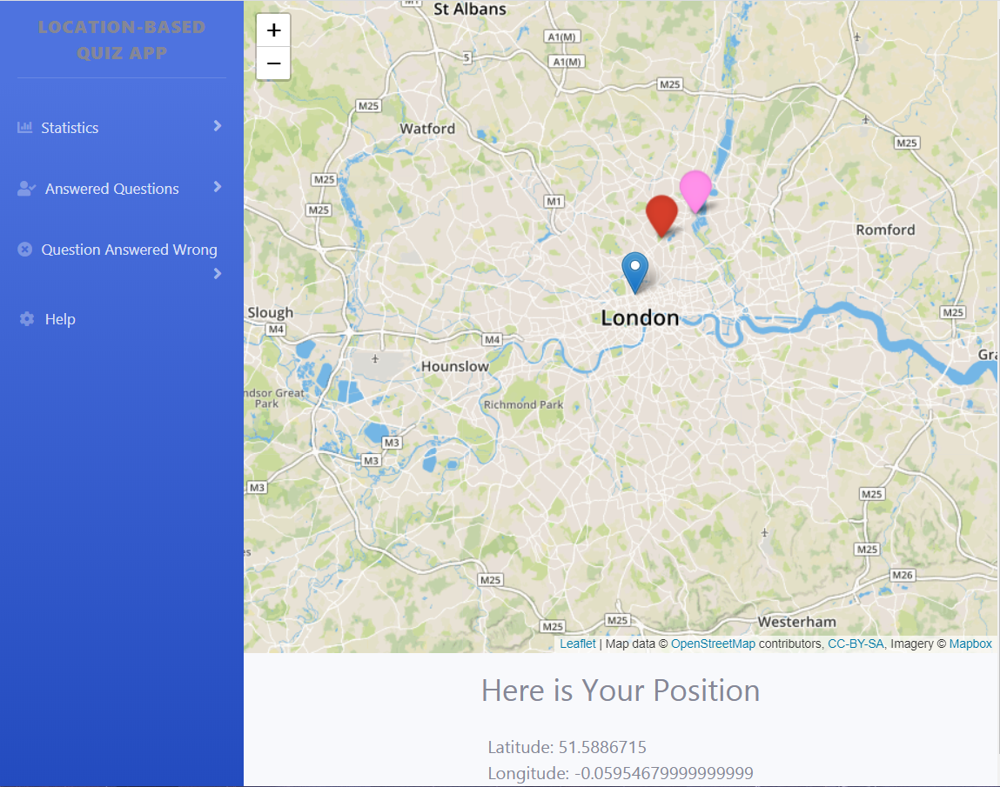
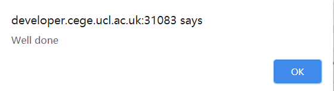
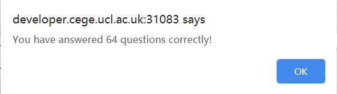
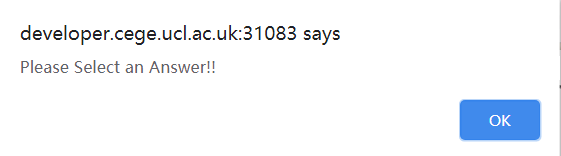
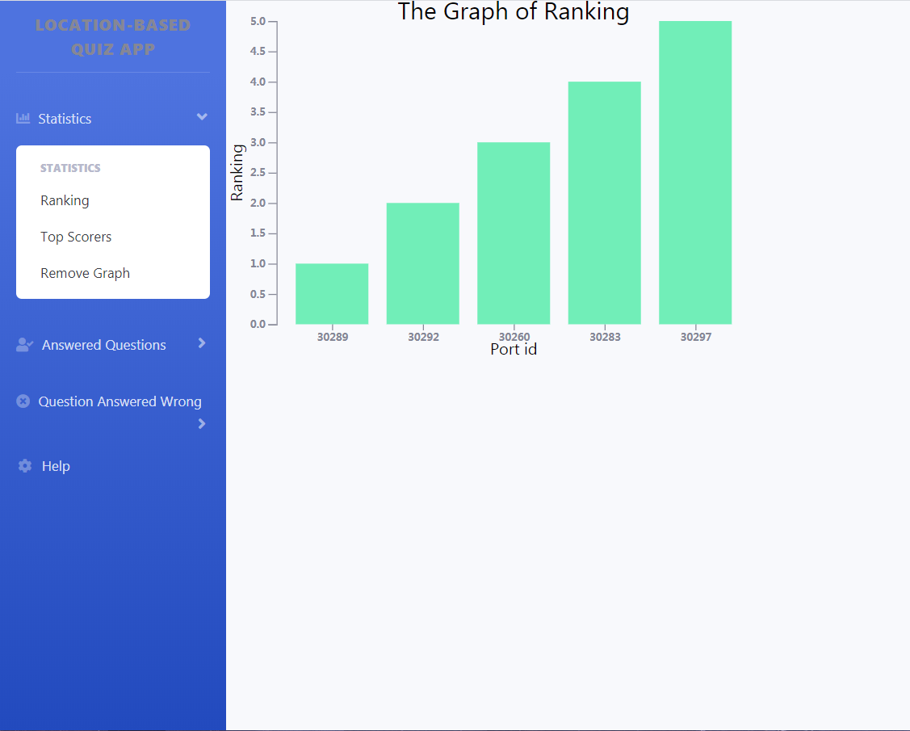
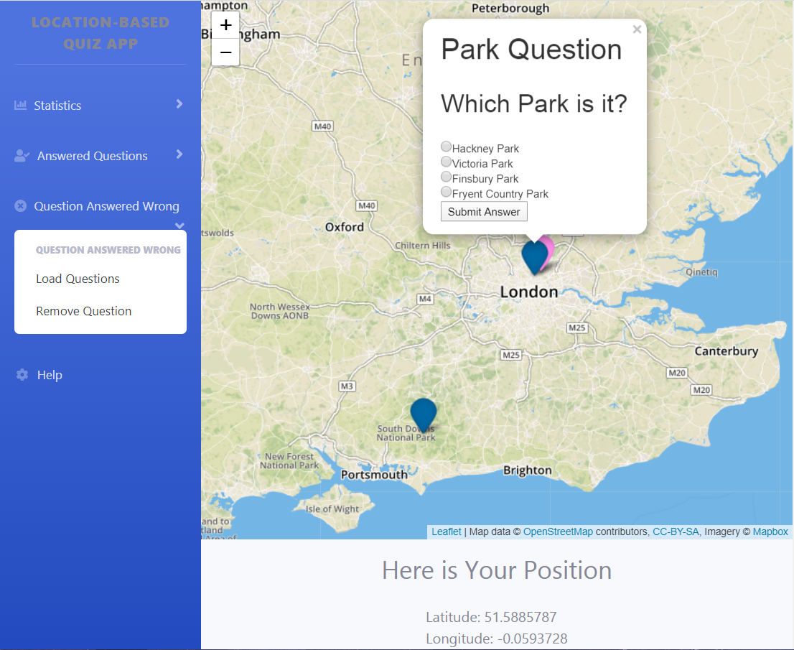

This page is a brief introduction of Quiz App which can provide a guidance for you to use this app correctly.
(Important!: The programmer has tried his best to debug this app and provide serval error handing to prevent app crash or different functions overlay with each other. However, it still not a perfect app. You can use this app in the way you liked, but the programmer suggests you close the function you are using before you start the other one!)
When you load the Quiz app, an interactive map would be loaded, the app would also track your location and shown the result below the map. Apart form that, the quiz questions would be loaded and shown as blue points in the map, your location would shown as pink points in the map. The question which is the closest to you would pop up automatically. You can also click the point to see the question.
You can click "Submit Answer to submit your answer to the question. If your answer is wrong, the system would say "Better luck next time!", and change the point colour to red.

If your answer is right, the system would say "Well done!", and change the point colour to green.

After that, the system would tell you how many questions you have answered correct include the question that you just submitted. If you did not choose an answer, the system would say "Please select an answer!"


You can click "Ranking" in "Statistics" function to get your current rank among all users.
You can click "Top Scorers" in "Statistics" function to get the graph show the top 5 scorers based on the number of correct answers.

You can click "Remove Graph" in "Statistics" function to remove the graph and reload interactive map.
You can click "Load Questions" in "Answered Questions" function to get the last 5 question points that user has answered. The colour of the point is depending on whether they were right/wrong the first time they answered the question. Green means right, red means wrong, pink point is your location. You can click the point to see the question.
You can click "Remove Question" in "Answered Questions" function to remove the points reload the existing questions.
You can click "Load Questions" in "Questions Answered Wrong" function to load questions points and calculates proximity alerts only for questions that the user has not answered correctly. The question shown as dark blue point, pink point is your location. The question which is the closest to you would pop up automatically.

You can also answer the question again in this part, the colour of the point would change based on whether you answer the question correctly.
You can click "Remove Question" in "Questions Answered Wrong" function remove the points reload the existing questions.
(Note: If app crash when you are using, you can try to refresh the page to fix it!)